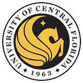

Work Experience
Senior Software Engineer
Discovery Education
January 2020 - Present
Front-End Engineering of JavaScript/Typescript apps using Vue3 (and Vue2) with a focus on WCAG 2.1 Accessibility, cross-browser supported web standards.
Key contributions:
- Upgrade & maintain multiple legacy web apps into modern production-ready apps using best practices and design patterns in new and existing web technologies.
- Implement & contribute to company-authored design system in collaboration with Designers, Developers, and Product Teams.
- Solve problems from multiple perspectives (Education, UX, Architecture, Diversity, Equity, and Inclusion) in an Agile and iterative environment.
- Deliver semantic, clean, performant, localized, and accessible code.
- Lead weekly code reviews to ensure code quality standards and share new learns.
- Contribute to continuous improvements in development, documentation, and standards.
- Build apps that serve millions of teachers and students across the US and Internationally.
Digital Manager - DiscoverDesign.org
Chicago Architecture Foundation
January 2015 - December 2019
Manage CAF's premier design education platform.
Key contributions:
- Project managed the relaunch of DiscoverDesign (2017)
- Contributed to design education curricula (Minecraft Camps, Girls Build Programs, teacher trainings on Design Process)
- Conference presentations at DML, MozFest, HiveBuzz and other conferences.
- Front-end contributions to new architecture.org (2018)
See more at DiscoverDesign.
Digital Learning Specialist
The Field Museum
June 2012 - January 2015
Created and managed digital learning curriculum and teacher training for The Field Museum Education Department. Responsible for tech integration across student programs.
Key contributions:
- Development of learning curricula using new technologies (Arduino, MaKey MaKeys, Google SketchUp)
- Started a youth council.
- Partner with scientifc staff to create focused programs for youth and teachers on Field Museum research.
- Facilitation of professional development for teachers on using tech in the classroom.
- Set up VirtualVisits from The Field - a distance learning online education service.
- Collaborate with other organizations on city-wide learning initiatives such as Chicago City of Learning and HIVE network endeavors.
- Supervise and support summer interns by developing work plans and professional development.
- Present and attend conferences related to informal learning (Games and Learning Society, ASTC, ISTE, Maker Faire, etc...).
Creative / Workshops and LIVE Events
Apple Inc.
April 2007 - June 2012
Provided one-to-one training on Apple products and software
Key contributions:
- Planned and implemented live events as a community engagement strategy
- Developed and Delivered workshops in the Apple Store's flagship theater
See my complete work history on LinkedIn.
Education

Northwestern University - Chicago, IL
Full-Stack Web Development Certificate, 2017
12 week full-time program.

University of Central Florida - Orlando, FL
B.A. - Interdisciplinary Studies, 2004-2008
Concentrations:
- Marketing
- Music Performance and Composition
- Humanities: Philosophy, Religion, and Popular Culture